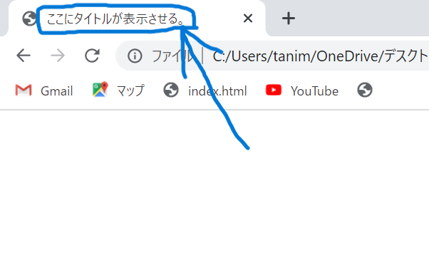
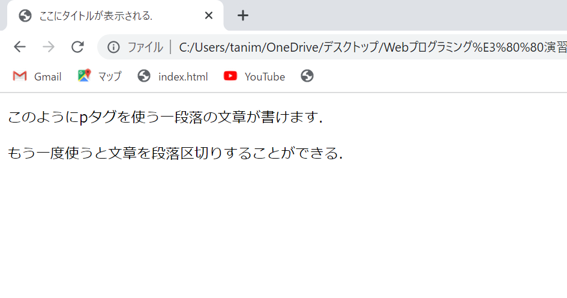
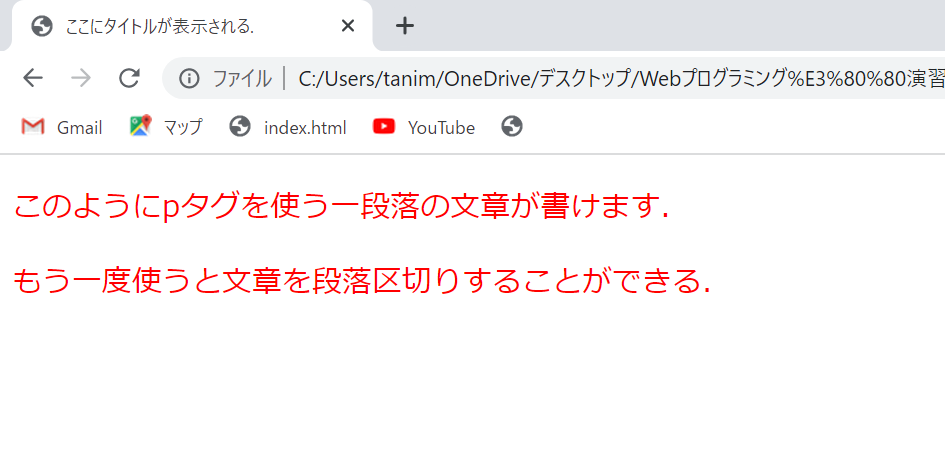

titleタグはGoogle等の検索エンジンの検索結果に現れるWebページのタイトル表示やタブのタイトル表示を行うために記述するものである。 titleタグを記述することでページのタブにタイトルをつけることができる. 今回は例として「ここにタイトルが表示される」という文章が現れる. また,検索エンジンの検索結果で上位に表示されないとサイトへの流入が少なくなるのでSEOに適した書き方を心がける必要がある.

↑上の出力結果のように画面左上の青く囲まれたタグのところに titleタグで打ち込んだ文章が表示されていることが分かる.
<!DOCTYPE html>
<html lang="en-US">
<title>ここにタイトルが表示される.</title>
</html>
pタグを使うことで一つの段落を生成することができるので, pタグを複数使うことで文章を段落区切りすることができる.

↑titleタグで使ったhtmlに追加でpタグを追加した.
<!DOCTYPE html>
<html lang="en-US">
<title>ここにタイトルが表示される.</title>
<p>このようにpタグを使う一段落の文章が書けます.</p>
<p>もう一度使うと文章を段落区切りすることができる.</p>
</html>
styleタグを使うことで本来CSSで設定するはずのプロパティ等をhtml内で直接設定することができる.

↑新たにstyleタグを追加してcssを用いずに2段落の文章にプロパティを追加した. 今回は文字の色を赤くし,文字フォントを20pxに設定した.
<!DOCTYPE html>
<html lang="en-US">
<title>ここにタイトルが表示される.</title>
<p>このようにpタグを使う一段落の文章が書けます.</p>
<p>もう一度使うと文章を段落区切りすることができる.</p>
<style>
p{
color: red;
font-size:20px;
}
</style>
</html>
日本大学文理学部情報科学科Webプログラミングの演習課題 5421058 三谷涼輔